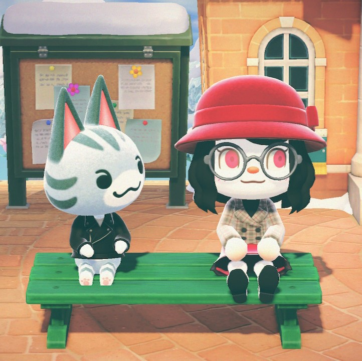

Animal Crossing: New Horizons (あつまれ どうぶつの森 ‘’Atsumare Dōbutsu no Mori’’) es un videojuego de simulación social desarrollado y publicado por Nintendo para Nintendo Switch, cuya fecha de lanzamiento mundial fue el 20 de marzo de 2020. Es la novena entrega de la saga Animal Crossing (incluyendo su edición para dispositivos móviles) y la quinta dentro de los videojuegos principales.
New Horizons recibió alabanzas por parte de la crítica, que destacaron su jugabilidad y las opciones de personalización, considerándolo el mejor juego de la franquicia en ese aspecto. Las críticas se centraron en un diseño artístico menos realista y un soporte de actualizaciones muy breve. El juego se convirtió en un éxito comercial, vendiendo más de 43 millones de unidades a fecha de 30 de septiembre de 2023. Estos datos lo ubican como el título más vendido de la saga (triplicando al segundo juego más vendido: New Leaf) así como el segundo videojuego más vendido de la consola Nintendo Switch, únicamente por detrás de Mario Kart 8 Deluxe. Parte de su éxito ha sido atribuido a su lanzamiento en pleno confinamiento por la pandemia de COVID-19, donde fue utilizado como sustituto de las interacciones sociales, tales como bodas o ceremonias de graduación, así como campañas políticas o incluso protestas virtuales.
